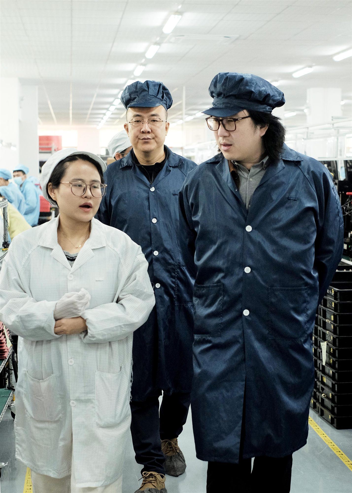

This article is part of WS Technicals' series Engineering Perspectives, where we highlight the people behind our battery solutions. Each article gives insight into the expertise, challenges and partnerships that shape the way we work.
Access to the centre of battery technology
For Qingpeng He, Chief Supply Chain Officer at WS Technicals, one of the most important parts of that work is building the connection between Danish engineering and Chinese battery manufacturing. Because while WS Technicals designs and develops battery solutions in Denmark, production often takes place in China, a country that has become one of the most advanced and mature markets for battery technology.
China's position in battery technology is no coincidence. According to Qingpeng, it is the result of long-term national focus, energy needs and years of industrial development.
"It has been a national strategy for many years. China has had a strong need for energy, and energy security is very important for a big country like China."Qingpeng He, CSCO
Over time, that focus has helped create a complete battery supply chain, from raw materials and refined components to cell manufacturers, battery packs, applications and end customers.
"In battery technology, China has a complete supply chain. Upstream you have minerals and refined materials, then you have cell manufacturers, then battery packs, then applications and customers. The whole chain is there."Qingpeng He, CSCO
For European companies, this matters. Battery technology is not only about having a strong design or a good idea. It is also about being able to produce reliably, at scale and with access to the right suppliers.
"The challenge and the goal is not only to acquire the best technology. The hard part is having stable production capacity."Qingpeng He, CSCO
He points to the struggles of European battery production as an example of how difficult it is to build this capability from scratch. Northvolt, once seen as Europe's flagship battery manufacturer, filed for bankruptcy in Sweden in March 2025 after a prolonged financial crisis and production ramp-up challenges.
"In China, it is not only about fancy technology. It is about stable production capacity and a stable supply chain."Qingpeng He, CSCO
Danish engineering still plays a critical role
While China provides access to technology, suppliers and production capacity, Qingpeng is clear that the Danish part of the setup is just as important.
At WS Technicals, the work begins with understanding the customer, the application and the requirements that the final battery solution must meet. This includes certifications, regulations, mechanical constraints, performance demands and market expectations.
"We have a very good understanding of the customer, especially the requirements for the European and the North American market. We know about certifications, regulations and what is required."Qingpeng He, CSCO
This is especially important because WS Technicals does not provide standard battery products. The company develops customized battery solutions for industrial customers, where each project has its own technical and commercial conditions.
"What we are doing is not providing a standard product. We are providing customized products for industrial customers. That involves a lot of regulations, customer specifications, market trends, and also how the end product should look and function."Qingpeng He, CSCO
This is where Qingpeng sees one of the strengths of Danish engineering.
"Good communication, understanding of the market, understanding the needs of the customer, and knowledge about regulations and certifications. For a company like us, one of our strengths is innovation and thinking out of the box."Qingpeng He, CSCO
Many large battery manufacturers are built for mass production and high-volume markets. WS Technicals operates in a different space, where niche applications, complex requirements and close customer dialogue are often more important than volume alone.
"A lot of Chinese battery companies are very big. They are often highly focused on the mass market. They want to design something that fits a large market. But for niche markets, and for special customer needs, I think WS Technicals are good, because we work closely with the customer and build solutions around the actual application, not around a standard product."Qingpeng He, CSCO
More than sourcing: building bridges between two business cultures
Qingpeng's role is not simply to find suppliers or negotiate prices. It is to make sure the right production setup supports the technical solution, the customer requirement and the long-term quality of the project.
"We do not really have one standard product. We select the right cells and the right supplier for each project, depending on performance, lifetime, price and the customer's requirements."Qingpeng He, CSCO
Some customers have very specific demands, for example cycle life, temperature range, environmental conditions or mechanical integration. In those cases, the supplier network becomes a strategic part of the solution.
"We are special because we have access to many different suppliers. Every project is different."Qingpeng He, CSCO
That flexibility gives WS Technicals the ability to match each project with the right technology and production partner. But it also requires deep knowledge of the supplier landscape and continuous dialogue with manufacturers.
"We need to stay in close contact with suppliers and understand the details. That is both unique and challenging."Qingpeng He, CSCO
Working across Denmark and China also means working across cultures, languages and time zones. Misunderstandings can occur, especially when technical details, expectations and responsibilities need to be aligned.
"Communication is always an important factor and a possible challenge. The culture is different, the language is different."Qingpeng He, CSCO
This is where Qingpeng's background becomes a key part of WS Technicals' setup. Originally from China and now working in Denmark, he is able to understand both sides of the collaboration, playing both the insider and the outsider, the customer and the supplier.
"I understand the Chinese side, but I also work here in Denmark and understand how we think here."Qingpeng He, CSCO
This gives him a unique position and viewpoint, and according to Qingpeng's experience, the key to establishing a solid partnership within the supply chain is not to focus on the differences. It is to find the shared motivation.
"In business, both parties want the project to work. Both parties want profit. So you need to find the motivation. What is the win-win situation?"Qingpeng He, CSCO

Trust makes projects move faster
In supply chain work, strong relationships are not built through emails alone. They require time, trust and a willingness to understand the other party's situation.
"You need to invest time. You need to meet people and understand what they want, what their motivation is, and why they behave the way they do."Qingpeng He, CSCO
When a problem arises, the reaction from a supplier is rarely random. It may be about cost, workload, production risk, capacity or contractual responsibility. Understanding that motivation makes it easier to solve problems before they escalate.
"Most of the time, there is a reason. It can be about cost, workload, risk or capacity. You need to understand the motivation behind the reaction. Then you can find a solution."Qingpeng He, CSCO
That understanding becomes especially valuable when the project is under pressure. A strong supplier relationship can turn a long email chain into a direct discussion and a faster solution.
"A long-term relationship has a lot of value. When there is trust, you can solve problems much faster. You can sit at the table and discuss instead of writing emails back and forth forever."Qingpeng He, CSCO
Looking beyond the lowest price
One of the most common mistakes Qingpeng sees when companies work with Asian manufacturing is focusing too narrowly on cost. Of course, price matters. But according to Qingpeng He, the lowest price is rarely the same as the best value when it comes to battery solutions. A battery must meet safety requirements, performance expectations, lifetime demands and application-specific conditions.
"If you only focus on cost, you can end up with a product that does not qualify for your standard. You may get a low price, but then you might have problems with quality or performance."Qingpeng He, CSCO
For WS Technicals, cost optimization is not about simply pushing suppliers for a lower number. It is about choosing the right design, the right production model and the right supplier. That is also why Qingpeng believes companies should be careful not to view China through outdated assumptions.
"China used to be seen as very cheap, and in the past maybe that was true in some cases. But now it is different. China has definitely caught up in high-end technology."Qingpeng He, CSCO
Understanding China is part of understanding batteries
For companies working with battery technology, Qingpeng believes China cannot simply be avoided, not if the goal is to develop durable, high-performance and commercially viable battery solutions.
"China is leading in the battery industry, not only in the very top technology, but in mass production technology for industrial products."Qingpeng He, CSCO
The point is not that everything must come from China. The point is that understanding the Chinese battery ecosystem gives companies access to knowledge, production experience and supplier capabilities that are difficult to replicate elsewhere.
"When you look at the battery ecosystem and supply chain, you can buy many things in Europe: motors, plastic parts, metal parts and so on. But for batteries, if you completely exclude China, it is almost impossible."Qingpeng He, CSCO
For Qingpeng, this is not necessarily a matter of competition, he perceives it as a matter of cooperation.
"From a European perspective, China can be seen as a competitor. But another way to see it is that we also need to understand China and cooperate where it makes sense."Qingpeng He, CSCO
From drawing to real product
When asked what he takes pride in, Qingpeng returns to moments where the work becomes tangible, where specifications, drawings, discussions and supplier coordination turn into a physical product.
Even though he is not part of the design team, his work touches many parts of the project, from technical discussions and requirements to deliveries, import and production communication.
"I get to see the drawings, the design, and then later the physical product. When you see something go from an idea to a real product, that feels good."Qingpeng He, CSCO
At WS Technicals, that transformation depends on more than engineering alone. It depends on being able to connect the right knowledge, the right suppliers and the right production setup, across borders. And for Qingpeng, that is exactly where the strength of WS Technicals lies.
Danish engineering defines the solution. Chinese battery expertise helps bring it to life. And in between, strong relationships, cultural understanding and supply chain experience make sure the project moves from idea to reality.